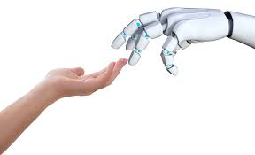

Introduction

As the quote above reveals - the development of AI and its application to Robotics is a very complicated topic. AI encompasses a huge array of issues, trends, and concerns on a wide variety of technical, software, moral and emotional levels. Our team has opted to address AI with a selective set of assessments inspired by the question: “Is this (AI Robotics) the smart thing to do?” - a question and treatment we believe to be highly relevant for our ITC 134 Class. Our approach was to first review the Robotic aspects of Artificial Intelligence which poses some of the largest potential impacts on our society and civilization. Then the white paper discusses the many different jobs that will be affected by AI Robotics commencing in the very near future. We continue to address the long term vision for AI as dependent on how the software can enable more “human-like” logic and self-learning processes. We present a “deep dive” on TensorFlow - a new library framework for machine learning, developed by the Google Brain team. This new and more powerful computing format is then reviewed in the broader context of other AI Frameworks, such as PyTorch, Theano, and Keras. We hope that this white paper helps you to answer the question posed about the relevance and importance of AI Robotics in your career planning and education.
Robotics - The Hardware Side
Introduction to AI-R: The term “Artificial Intelligence” (AI) refers to the use of a computer to act in a manner resembling human behavior. Robotics is connecting computer perception with mechanical action. So AI can make the robotic connection “intelligent”. Most robots work according to a computer program or are controlled by a remote human operator. The intelligent robots have sensors on board as well as processors to diagnose the information sensed, as well as memory capacity. Even though the robotic forms resemble other life forms - known or created - we are striving to make them “smart” like humans via the use of algorithms that can learn, and perform with intelligent behavior. This poses a significant challenge - as we still don’t know how our own brains with the billions of connections between our neurons actually work. So AI robotics is working to theoretically explore the ability to learn, reason, and use language to formulate ideas. First, facts about the issue at hand are gathered thru various sensors or human input. This information is then compared to data already stored - and its significance is evaluated. Then all the possible actions and scenarios and their outcomes are assessed - and the (potentially) most successful action is defined. But these assessments can only be applied to issues that are specifically programmed - robots with AI cannot process any and all information that they are presented with. A major component to AI Robots is the ability to self-improve - or learn. And a major criterion is the minimization of human intervention - and this approach is being applied in a wide range of sectors: e-commerce; medical (diagnostics); security; self-driving vehicles for transportation; and of course military applications.
What is TensorFlow?
TensorFlow™ is an open source software library for high-performance numerical computation. Its flexible architecture allows easy deployment of computation across a variety of platforms (CPUs, GPUs, TPUs), and from desktops to clusters of servers to mobile and edge devices. Originally developed by researchers and engineers from the Google Brain team within Google’s AI organization, it comes with strong support for machine learning and deep learning and the flexible numerical computation core is used across many other scientific domains.
What is Data Flow Graph:

The data flow graph uses a directed graph of "nodes" and "edges" to describe the mathematical calculations. A "node" is generally used to represent an applied mathematical operation but can also represent the start of the data input (feed-in) or the end of data output(push out), or the end of a read/write persistent variable. "Line" means the input/output relationship between "nodes". These data "lines" can transport a "size dynamically adjustable" multidimensional data array(tensor). The visual image that the tensor flows through the graph is the reason why this tool is named "Tensorflow." Once all the tensors at the input are ready, the nodes will be assigned to various computing devices to execute the calculation asynchronously in parallel.